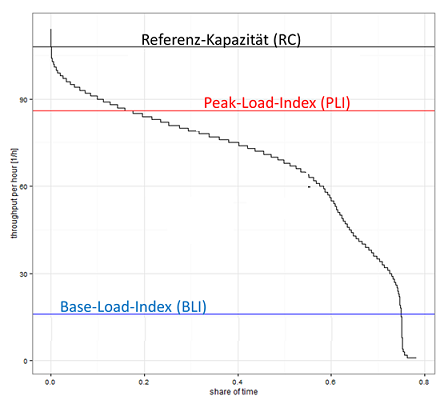
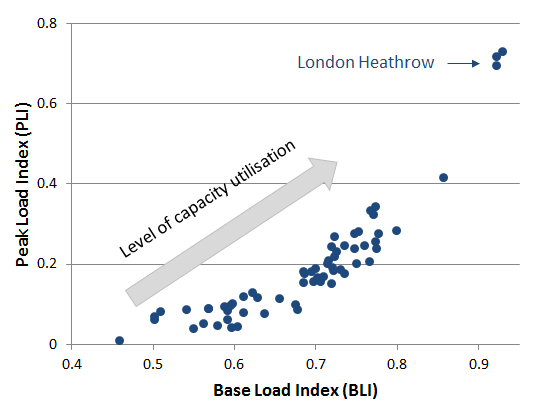

Airport Capacity Utilisation Methodology
Overview
Various methods exist to address the determination of the airport capacity. However, there are only a limited number of empirical approaches addressing the capacity utilisation at airports.
A convenient way to summarise the range of operational capacities (i.e. runway system throughputs) are Capacity Coverage Charts (CCC) (De Neufville and Odoni 2003). While an airport has a theoretical maximum capacity, the practical capacity is considered to be established in order to limit the average delay to a reasonable level. The latter may also be impacted by local constraints or requirements of the capacity declaration process.
(ref:ccc) Capacity Coverage Chart.
The capacity coverage chart (i.e. CCC) describes the ordered set of observed throughputs at an airport. As depicted in Figure @ref(fig:ccc), the CCC varies dependent on the traffic, enviromental factors, and/or operational constraints. Ordering the observed (hourly) throughputs for the airport establishes a generally decreasing step function over the time horizon (e.g. expressed in terms of observation hours or % of time).
(Schinwald and Hornung 2014) describe a procedure to quantify the level of capacity utilisation comparing two characteristic throughput values. These characteristic values, i.e. basic load index (BLI) and peak load index (PLI), are based on the observed operational throughput of the airport.
(ref:pli-bli) Capacity Coverage Chart and PLI calculation.

The Base Load Index (BLI) refers to the share of time an airport operates above a defined base level (15% of the reference capacity) and the Peak Load index (PLI) provides an indication of the share of time the airport operates above peak level (80% of reference capacity).
Considering the achieved levels of throughput across the European top 30 airports, a diverse picture emerges. While a number of airports show the classical throughput peaking behaviour with a consistent base level throughout (\(0.65 < \textrm{BLI} < 0.8\)), London Heathrow (LHR) in the top right corner shows a clear exceptional capacity utilisation.
(ref:pli-bli-prr) BLI over PLI for major European airports.

For a more detailed explanation of the methodology see (Schinwald and Hornung 2014).
See Also
References
De Neufville, R., and A. R. Odoni. 2003. Airport Systems: Planning, Design, and Management. Aviation Week Books. McGraw-Hill.
Schinwald, C., and M. Hornung. 2014. “Methodical Approach to Determining the Capacity Utilisation of Airports: The Development of the European Air Traffic System Between 2008 and 2012,” November. http://www.dglr.de/publikationen/2014/340138.pdf.